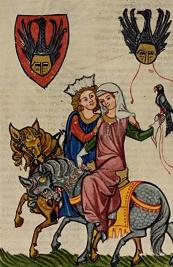

Listen to "The Hawk" in English

VII L'EPERVIER
Epervier, ébrouant étoiles et comètes,
Un blason figera tes colères, un clou,
Astre au poitrail rougi envoûtera le loup.
Sous vitrine brisés, tes vols sans vols s'émettent.
Quel acide nimbait tes crocs d'instincts jaloux?
Quelle rage vers tes rivaux, bague, non chaîne?
Quel sang inaltéré vers outre sang s'empenne?
Quel festin dans tes chairs qui se ranime et joue?
Le corselet ravi t'aveugle, clarté pleine,
L'azur qui semble nuit, nuit qui n'aura de fin.
Te soulèvent la peur, ou la mort, ou la faim,
Comme un bord plus divin que prétexte ta haine.
Le sang de ton festin constelle ton essor.
D'un coeur qui se rongea, figures-tu le sort?
Michel Galiana (c) 1990
VII THE HAWK
Hawk who shaked off your wings comets and falling stars,
A brass blazon freezes your fits of wrath: a nail,
Red-hearted bead that casts upon you, wolf, its spell.
Your preyless pounces thwarted by a cage's bars!
Which fluid did drench your claws, did on them keen ire etch?
Which rage towards rivals? Was it the ring, the chain?
Which stainless blood does your wing to alien blood strain?
Which feast has its flaring revival in your flesh?
Once the hood is removed, replaced by blinding light,
Blue sky akin to night, to everlasting night,
You are lift up by fear, by death or by hunger,
More divine luring shores than pretended anger.
Blood-besmirched by your feast shall your attempt to start
Be compared with my fateful self-gnawing heart?
Transl. Christian Souchon 01.01.2005 (c) (r) All rights reserved
Le fabuleux oiseau de proie, empaillé et prisonnier d'une cage, est peut-être l'image du poête et le corselet une allégorie de la distance à laquelle il tient la prosaïque réalité.
"Tes vols sans vols": Michel ne dédaignait pas les jeux de mots!
The fabulous bird of prey, stuffed and prisoner of a cage, is here, perhaps, the image of the poet and the hood an allegory for the distance which he keeps between himself and trivial reality.
Your prey ("vols")-less pounces ("vols")" : Michel did not disdain puns!
Listen to "The Hawk" in English